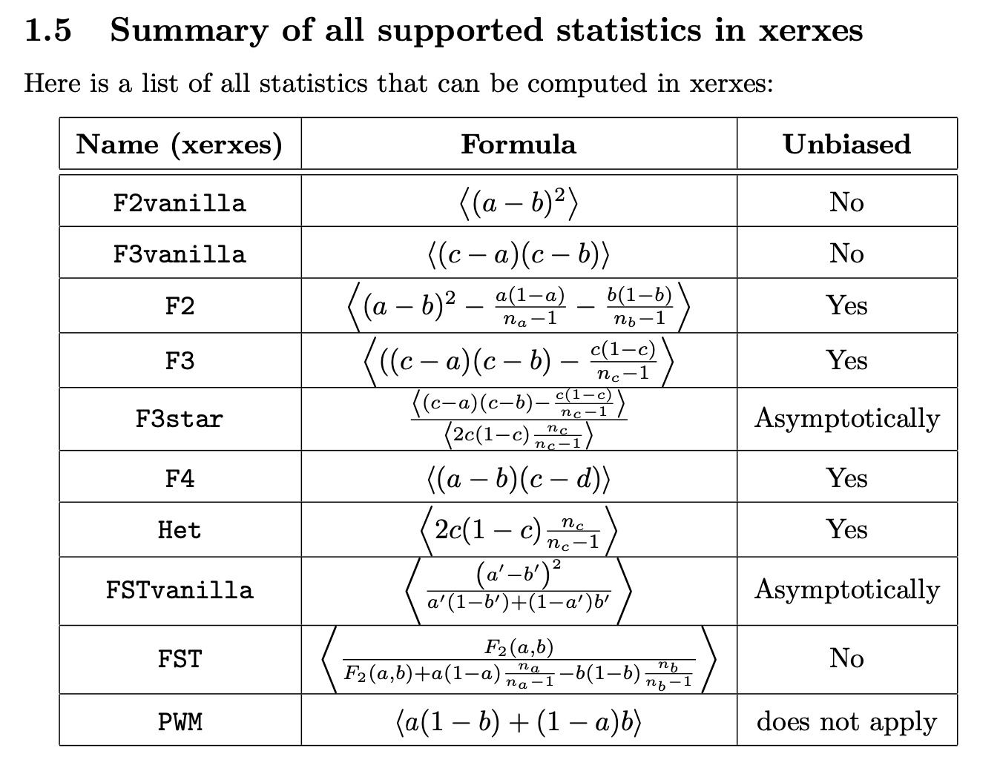

Xerxes’s cutlery - enjoying your dinner?
So, you’ve ordered your food, now what?
Often, we want to summarise the genetic data through summary statistics. Examples for such summary statistics are F-Statistics. Our tool xerxes fstats, which is part of the Poseidon ecosystem, provides a powerful and expressive tool to compute such summary statistics from genetic data described in Poseidon packages.
Specifically, you can for example reproduce the famous F4 statistics that first showed that Neandertalers, a group of close human relatives that disappeared around 45,000 years ago, interbred with modern human ancestors.
This is its form: F4(Chimpanzee, Neandertaler, African, European). It is defined in terms of average allele frequency correlation across a set of genetic positions.
So, which Chimpanzee, Neandertaler, African and European groups do we have in our datasets on our servers? Let’s find out:
> trident list --remote --groups | grep Chimp
trident v1.3.0.4 for poseidon v2.5.0, v2.6.0, v2.7.0, v2.7.1
https://poseidon-framework.github.io
[Info] Downloading group data from server
[Info] Message from the Server: Greetings from the Poseidon Server, version 1.3.0.4
| Chimp.REF | Reference_Genomes | 2.2.0 | 1 |Cool, so there is a group called Chimp.REF in a package called “Reference Genomes” which looks right. What about Neandertals?
> trident list --remote --groups | grep Neanderthal
trident v1.3.0.4 for poseidon v2.5.0, v2.6.0, v2.7.0, v2.7.1
https://poseidon-framework.github.io
[Info] Downloading group data from server
[Info] Message from the Server: Greetings from the Poseidon Server, version 1.3.0.4
| Altai_Neanderthal.DG | Archaic_Humans | 2.2.0 | 1 |
| Altai_Neanderthal_published.DG | Archaic_Humans | 2.2.0 | 1 |
| Chagyrskaya_Neanderthal.SG | 2020_Mafessoni_Neanderthal | 0.2.0 | 1 |
| DenisovaNeanderthalMix.SG | Archaic_Humans | 2.2.0 | 1 |
| Goyet_Neanderthal.SG | Archaic_Humans | 2.2.0 | 1 |
| LesCottes_Neanderthal.SG | Archaic_Humans | 2.2.0 | 1 |
| Mezmaiskaya1_Neanderthal.SG | Archaic_Humans | 2.2.0 | 1 |
| Mezmaiskaya2_Neanderthal.SG | Archaic_Humans | 2.2.0 | 1 |
| Spy_Neanderthal.SG | Archaic_Humans | 2.2.0 | 1 |
| VindijaG1_Neanderthal.SG | Archaic_Humans | 2.2.0 | 1 |Cool, those are a lot. We’ll just go with Altai_Neanderthal.DG.
For the African and Europeans, you can do it similarly, but I’m just telling you that we want “Yoruba” (from Nigeria) and “French” (from, well, France).
So how do you get the data? Easy enough. You can just order your meal, remember? Here is the way to download the packages without even knowing which packages:
trident fetch -d ~/poseidon_repo -f 'Chimp.REF,Altai_Neanderthal.DG,Yoruba,French'This will download the relevant packages into a repository location specified by -d. You can then just run:
xerxes fstats -d ~/poseidon_repo --stat 'F4(Chimp.REF,Altai_Neanderthal.DG,Yoruba,French)'Here, -d gives the location of your package repository. This runs and outputs a bunch of stuff, and then closes with:
.-----------.-----------.----------------------.--------.--------.---------.----------------.--------------------.------------------.-------------------.
| Statistic | a | b | c | d | NrSites | Estimate_Total | Estimate_Jackknife | StdErr_Jackknife | Z_score_Jackknife |
:===========:===========:======================:========:========:=========:================:====================:==================:===================:
| F4 | Chimp.REF | Altai_Neanderthal.DG | Yoruba | French | 549812 | 1.5083e-3 | 1.5083e-3 | 1.9721e-4 | 7.648265856488313 |
'-----------'-----------'----------------------'--------'--------'---------'----------------'--------------------'------------------'-------------------'The very last number shows that this statistic is significantly positive (i.e. has a Z-score above 3), which shows that Altai_Neanderthal.DG is significantly more closely related to French than to Yoruba.
Of course, xerxes fstats can do a lot more, and you can read about it in our documentation.
We have also added a detailed whitepaper now, which describes the mathematical details of the methods implemented here. For example, here is the table of listed statistics from the whitepaper:

F-Statistics are one important analysis tool used in the field, but there are of course a lot more, and we hope to implement some more in xerxes in the future.